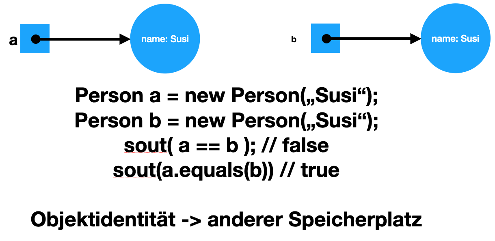
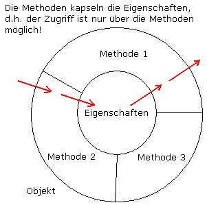

2. 2020-10-05
4. 2020-10-19
4.1. Ignorieren von Files
-
In einem File
.gitignorewerden sämtliche Dateien und Ordner angegeben, die NICHT ins Repo gespeichert werden, dh sie sind nicht Bestandteil einer Version (Schnappschuss) -
Werden bereits im Repo enthaltene Files in die .gitignore eingetragen, so werden diese weiterhin committed
-
Diese Files sind vorher aus dem Repo zu löschen
-
4.4. Änderungen bis zum letzten Commit zurücknehmen
Falls ein geändertes File noch nicht commited wurde, kann man die Änderungen bis zum letzten commit zurücknehmen.
git restore <file>oder
git restore .-
Neu erstellte Files bleiben bestehen
-
Löschen neu erstellter Files
git clean -f| Dangerous operation |
5. Den Zustand eines früheren Commits herstellen
git rm <file>git restore --source=HEAD~1 <file-with-exact-path> (1)| 1 | HEAD~1 bedeutet, ein Commit vor dem letzten Commit (vorletzter Commit) |
Das neu erstellte (bzw. zurückgeholte) File ist untracked.
5.1. Detached HEAD
-
In git gibt es mehrere Branches
-
Der Hauptbranch heißt in git
master -
in anderen VCS
trunk
-
git log --oneline8ade525 (HEAD, master) remove unused code db633a9 make the repo clean 028fc7c add important code cc9fd84 remove unused code 9f57ec0 add minutes-of-meeting-template 3fb9399 initial commit
# git checkout <commit-id>
git checkout 3fb9399
git log --oneline (1)| 1 | Anzeigen der neuen History
|
3fb9399 (HEAD) initial commit
-
Wenn der HEAD-Pointer zu einem (früheren) Commit zeigt, spricht man von einem detached HEAD, dh MASTER und HEAD zeigen nicht mehr auf den selben (den letzten) Commit
-
Bei einem detached HEAD, sollten keinen neuen Commits durchgeführt werden
-
diese neuen Commits wären nicht mehr erreichbar
-
8. 2020-11-16
8.2. Projektziele
Buch Kap. 2.3
bis Seite 53 (inkl. Operationalisierung)
HÜ: Erarbeiten des Begriffs "Operationalisierung" mit Beispielen.
8.2.1. Vorgangsweise zur Erstellung des Projektantrags
Voraussetzung:
-
Docker oder podman
-
Intellij installieren
-
über Jetbrains Toolbox !!!!!!!!!!!!!!!!!!
-
IntelliJ Ultimate (stable-version) installieren
-
Plugins installieren
-
8.3. Erstellen einer AsciiDoctor - Doku-page (inkl gh-pages)
-
Checkout des Classroom-Repositories (ist derzeit noch leer)
-
Hinzufügen der Asciidoctor-Erweiterung zum Projekt
-
Erstellen eines Documents project-proposal.adoc im asciidoc-Verzeichnis
-
im github-repo im dafür vorgesehenen Bereich (About) den Url der gh-pages (index) eintragen
-
Eintragen des gh-pages Link zum project-proposal in das README.md
<<project-proposal.adoc#, open project proposal>>
-
Nach Fertigstellung, einchecken ins classroom-github-repository.
-
Beachte:
-
Lösche das asciidocs-demo - Verzeichnis
-
Lösche das Bild
animal-pet-cute-kitten-45201.jpg -
Zum abgeben ein commit/push durchführen
-
Die gh-pages müssen erstellt sein
-
Sämtliche Files müssen im Repo enthalten sein
-
-
9. 2020-11-23
9.2. Festlegen der Projektgruppen
Projekte - Themenvergabe
| Team | Members | Notes |
|---|---|---|
Team 1: End-to-End-Event-Management |
|
|
Team 2: Work Monitor |
|
|
Team 3: Hotel Room Booking System |
|
|
Team 4: RankCar |
|
|
Team 5: Restaurant Management System |
|
|
Team 6: Watering Reminder |
|
|
Team 7: finoview |
|
PL … Projektleiter
10. 2020-11-30
10.1. Wdhlg. Begriff Operationalisierung und Indikatoren
-
quantifizierbar → etwas zählbar, messbar oder wiegbar machen
-
operationalisieren → einen abstrakten Begriff mit Indikatoren ausdrücken.
-
Indikatoren → Zahlen die auf etwas hinweisen (lat. indico … anzeigen) Werden gemessen, gezählt oder gewogen.
-
Kennzahlen → werden aus anderen Kennzahlen oder Indikatoren berechnet.
10.2. Stakeholder
-
Arbeiten nicht direkt am Projekt mit, sind aber von den Auswirkungen betroffen → Betroffene
10.4. Projektauftrag
Kap. 2.5
-
Meilenstein → Termin mit einer sachlichen Inhaltskomponente, welche überprüfbar ist.
| Erstellen eines Projektauftrags pro Gruppe und einchecken Project-Repository. |
-
Es besteht die Wahl zwischen maven und gradle
10.5. Build-Tools
10.5.1. Aufgaben eines Build-Tools
-
Durchführen des Build-Prozesses
-
Kompilieren der Sourcen
-
Linken der Libraries
-
Durchführen der Tests
-
…
-
10.5.2. Ant
-
Another Neat Tool
-
sehr flexibel, keine Struktur
-
in einem xml-File (zB. build.xml bei Netbeans) können Build-Steps selbst definiert werden
-
Cons
-
in jeder IDE eine eigene Struktur
-
Projekte konnten zwischen IDEs nicht ohne Anpassungen ausgetauscht werden
-
Die Libraries müssen manuell heruntergeladen werden → lib-Folder
-
Es wurde Ivy benötigt, um die Libraries automatisch herunterzuladen
-
10.5.3. Maven
-
Pros (Vorteile)
-
fixe Struktur mit life-cycle
-
sehr großes Ökosystem
-
Automatischer Download der benötigten Libraries zentral am Arbeits-PC (.m2- Verzeichnis im HOME)
-
in der korrekten Version
-
es gibt Repositories der Libraries zB https://mvnrepository.com
-
-
in Foren und Beispielen im Netz meist maven
-
großes Ökosystem an Libraries und Plugins
-
-
Cons (Nachteile)
-
zu fixer life-cycle, unflexibel
-
xml als Notation der pom.xml
-
10.6. UML-Klassendiagramm
-
Konvention → Vereinbarung
-
Signatur einer Methode: Scope + Rückgabewert + Methodenname + Parameterleiste
-
Objekt (Object) = Instanz einer Klasse; mit Identität und Zustand
-
Beispiel: PKW
-
Anwendungsfall 1: Transport von Personen
-
Anwendungsfall 2: Transport von Gütern
-
Anwendungsfall 3: Cruisen auf der Landstraße (Statussymbol)
-
-
Eigenschaften von Objekten
-
Objektidentität
-

-
Datenkapselung 
-
Polymorphismus (Vielgestaltigkeit)
Duck donald = new Duck();
donald.say(); // quack
Cat mimi = new Cat();
mimi.say(); // miau
List<Animal> animals = new LinkedList<>();
animals.add(donald);
animals.add(mimi);
animal.get(0).say(); // quack
annimal.get(1).say(); // miau-
Vererbung
10.6.1. Beziehungen zwischen Objekte
10.6.2. Zwei Arten der Darstellung assoziativer Tabellen
-
Assoziative Tabellen werden zur Auflösung von *:*-Beziehungen gebraucht
Notation 1 & 2 als ERD

| HÜ - Klassendiagramm für Bsp Kinokette (gezeichnet in plantuml) |
Die Firma STAR-MOVIES betreibt eine Kinokette mit mehreren Kinos (Name, Adresse, … ).
In jedem Kino können mehrere Säle untergebracht sein, in denen die Filme gezeigt werden. Der Sitzplan jedes Saales soll festgehalten werden; für jeden Sitz muss eine Reihe und ein Platz angegeben sein. Eine Loge soll wie eine Reihe verwaltet werden.
Die Erstellung eines Spielplanes muss möglich sein. Es können pro Saal natürlich mehrere Filme an einem Tag gezeigt werden. Um die freien Sitze einer Vorstellung feststellen zu können, ist jeder Kartenkauf zu vermerken. Auf jeder Eintrittskarte soll aufscheinen: Kino, Saal, Filmtitel, Datum, Beginnzeit, laufende Nummer innerhalb der Vorstellung, Reihe, Platz, Preis.
Für die Preisgestaltung ist vorzusehen: Jede Reihe eines Saales hat einen Standardpreis, für bestimmte Vorstellungen können die Reihenpreise aber auch individuell festgelegt werden. Für Auskunftszwecke sollen die Schauspieler mit ihren persönlichen Daten (Nachname, Vorname, Nationalität, Geburtsdatum, Todesdatum, Bemerkung, … ) erfasst werden und die Aussage möglich sein, welche Schauspieler in welchen Filmen mitgespielt haben.
Die analogen Aussagen sollen auch für Regisseure möglich sein, wobei angenommen werden kann, dass es für einen Film nur einen Regisseur gibt. Es ist allerdings möglich, dass bei einem Film der Regisseur auch mitspielt.
Die sonstigen Daten eines Filmes umfassen: Titel, Art (Krimi, Western, Jugendfilm, … ), Herstellungsjahr, Land, Sprache, Dauer, Verleih, etc.
-
Inhalt:
-
ein File mit Namen nachname-cld.adoc (oder .puml)
-
ein File mit Namen nachname-cld.png
-
-
Termin: 7. Dezember 2020
12. 2020-12-16
-
(Ersatztermin für Montag 2020-12-14 → Physik-Test)
12.1. Übung "Bibliothek"
Eine Bibliothek möchte ein Online-System einführen, das die Verwaltung der Buchbestände, das Auffinden von Büchern nach Fachrichtung und Stichworten ermöglicht.
Die Daten über Bücher entstehen beim Einkauf, wo Autor, Titel, Verlag, Kurzerklärung, ISBN- Nummer usw. erfasst werden. Ein Buch kann in mehreren Exemplaren angekauft werden.
Alle weiteren Daten entstehen beim Entlehnen und der (hoffentlichen) Rückgeben der Bücher. Daher sollte auch festgestellt werden können, wer, wie lange und bis wann welches Buch entlehnt hat. Bei Verzug wird dem Betreffenden eine Mahnung per Post geschickt. Die maximale Ausleihdauer und die Mahnspesen sind je nach Buch unterschiedlich.
-
Aufgabe: Erstellen sie ein Klassendiagramm in plantUML → <nachname>.puml
-
Exportieren Sie das CLD als png → <nachname>.png
-
Geben Sie die beiden Files am Classroom-Server ab (github: https://classroom.github.com/a/0UvNu-JI)
13. 2020-12-21
13.5. Übungen
-
Termin 7. Jänner 2021
-
Abgabe: https://edufs.edu.htl-leonding.ac.at/moodle/course/view.php?id=2924#
13.5.1. Sparverein
Ausgangssituation
-
Der Kassier eines Sparvereins möchte die Einzahlungen der Sparvereinsmitglieder EDV-mäßig verwalten.
-
Eine Einzahlung findet 1x pro Monat an einem bestimmten Tag statt.
-
Für jede Einzahlung ist das Sparvereinsmitglied, der Betrag und das Einzahlungsdatum zu vermerken.
-
Vergisst jemand auf eine Einzahlung, so muss er bei der nächsten Einzahlung Strafe zahlen. Da die Strafen für Ausflüge, …. verwendet werden, müssen die Strafbeträge extra gespeichert werden.
-
Der Kassier sollte am Jahresende die Möglichkeit haben, den Gesamtbetrag zu jedem Mitglied leicht berechnen zu können.
13.5.2. Motelreservierungssystem
Ausgangssituation
Modellieren Sie ein Reservierungssystem für Motels, welches die Reservierung von Zimmern, sowie die Verwaltung von Aufenthalten erlaubt. Motels werden durch eine Nummer eindeutig identifiziert, befinden sich in einer bestimmten Stadt und stellen Zimmer verschiedener Kategorien zur Verfügung. Kunden führen Reservierungen für einen geplanten Aufenthalt durch. Der tatsächliche Aufenthalt kann von den Plandaten bezüglich Terminen und Zimmer abweichen. Zum Aufenthalt sind weiters die getätigten Ausgaben mit Bezeichnung, Datum und Uhrzeit zu speichern.
13.5.3. Wasserwerk Kugelmugel
Ausgangssituation
Die Stadtverwaltung von Kugelmugel hat sich entschlossen, das Abrechnungssystem für den Wasserverbrauch der Abnehmer (Kunden) grundlegend zu reorganisieren. Es soll zu diesem Zweck ein neues EDV-System entwickelt werden. Bisher wurden die Zählerstände der einzelnen Abnehmer von den Wasserkassierern der Stadt vierteljährlich abgelesen und gleichzeitig wurden bei diesen Besuchen die Abrechnungen des vorhergehenden Quartals vorgelegt und die entsprechenden Rechnungsbeiträge eingehoben.
Mit Hilfe des EDV-Systems und der entsprechenden Datenbankapplikation soll nun folgende Vorgangsweise realisiert werden:
-
Einmal im Jahr wird der Zähler (eindeutige Gerätenummer) von einem Kontrollorgan überprüft, der Wasserstand abgelesen und der Verrechnungsstelle übermittelt.
-
Die Zähler eines Abnehmers werden dann abgerechnet und die Wasserabnehmer erhalten vierteljährlich einen Zahlschein, mittels dem sie eine Teilzahlung für den Wasserverbrauch leisten. Dieser Teilbetrag wird vom Wasserwerk vorgeschrieben und errechnet sich aufgrund des letzten Jahresverbrauchs. Eine Kontrolle der Zahlungen soll über EDV möglich sein.
-
Bei den Abrechnungen ist zu berücksichtigen, dass die Abnehmer auch mehrere Zähler installiert haben können.
15. Lecture 2020-01-18 - JDBC
-
Wir verwenden zusätzlich zu JDBC eine Bibliothek namens myBatis, um SQL-Skripts ausführen zu können.
-
Warum verwenden wir hierzu nicht JDBC?
-
JDBC dient eher dazu einzelne SQL-Statements an die Datenbank zu schicken und dann das Ergebnis im Java-Programm zu verarbeiten
-
| Gruppe | Bezeichnung | Zweck | Statements |
|---|---|---|---|
DML |
Data Manipulation Language |
Erstellen/Ändern/Löschen von Daten |
INSERT/UPDATE/DELETE |
DDL |
Data Definition Language |
Erstellen/Ändern/Löschen von Datenstrukturen zB Tabelle,View,… |
CREATE/ALTER/DROP |
DQL |
Data Query Language |
Erstellen von Abfragen |
SELECT |
TCL |
Transaction Control Language |
Durchführen von Transaktionen (unteilbare Folge von Statements) |
COMMIT/ROLLBACK/SET SAVEPOINT |
DCL |
Data Control Language |
Erstellen von Berechtigungen |
GRANT/REVOKE |

-
Stammdaten
-
Bewegungsdaten, sind periodenbezogen, gelten meist für ein Geschäftsjahr
-
(Lookup-Tables) als Ersatz für Enumerationen
17. 2021-02-01 - Scrum
17.1. Präsentation Scrum
-
Präsentation Scrum wurde besprochen
-
Stakeholder … Betroffene
-
priorisieren … nach Wichtigkeit ordnen
-
Domain (Domäne) … Fachbereich
-
Domain Object Model (DOM)
-
nicht-technische Klassen, die den Bereich (die Domäne) des Kunden betreffen, zB
-
Kunde
-
Produkt
-
Rechnung
-
Rechnungsposition
-
-
kann man vielleicht als objektorientiertes ERD bezeichnen
-
nicht zu verwechseln mit Document Object Model (HTML)
-
-
Repository … Sammlung von Dingen, Artefakten, …
17.2. Verwenden von github-projects
-
Erstellen eines gh-Projects
-
Erstellen von Meilensteinen
-
Zuordnen von Issues
17.3. Übung: Erstellen er User Stories und der ersten Tasks
Termin: bis nach den Ferien
-
Erstellen eines Labels "user-story"
-
Erstellen von mehreren Issues mit Label "user-story" entsprechend dem Foliensatz
-
Für (jede) user-story werden mehrere Tasks erstellt und
-
dem Projekt
-
und dem Teammitglied zugeordnet
-
Anmerkung: die zeitlich näheren US werden bezüglich Tasks detaillierter spezifiziert
-